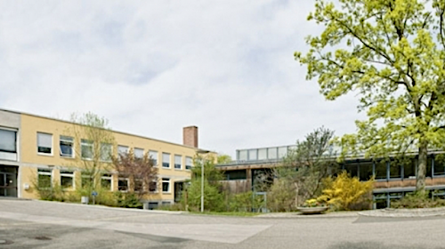
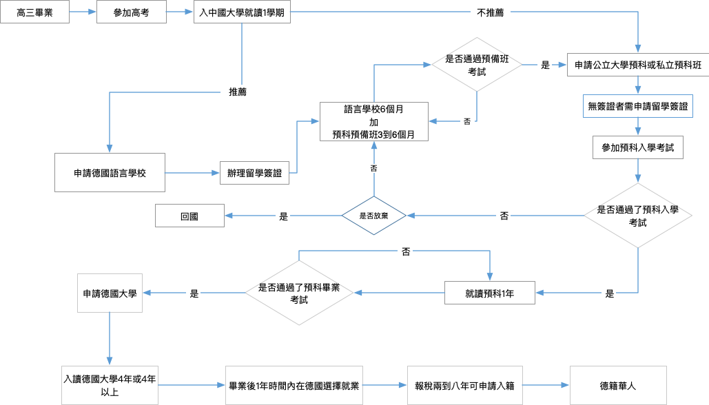
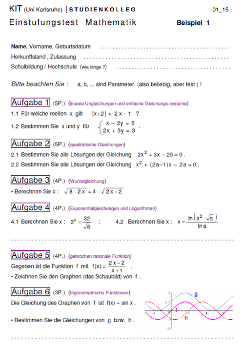
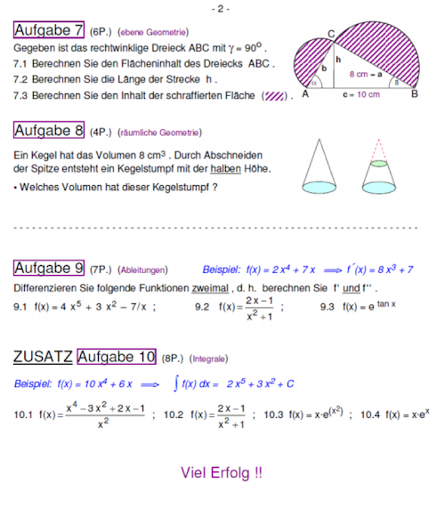

德國留學簡介
多樣化的教學體制
德國教育世界領先。2015/2016年度有34000所學府招收新生。其中有一半即15500所學府是小學。普通中學3000所，實體中學2300所以及3100文理中學。經過基礎教育後，學生可以選擇職業教育或者接受426所高等學府的教育。其中有4分之1是古典綜合大學，大約佔一半比例的專科大學。特別是德國大學專業類繁多，據2017年統計德國學士學位專業有7812種，碩士專業7618種，國家或教會文憑1165種。

法定入學年齡為6歲小學基本教育4年，10歲時進入性向班, 隨後考入中學,中學按照基礎分4種(從易到難):中學,綜合中學 ,實體中學,文理中學。
德國426所大學(2016), 124所綜合大學，69%大學生就讀綜合大學(包括教育大學),216所專科大學(技術，科技等等),52所藝術大學,50所其他種類大學,公立大學屬於德國聯邦州政府，每個聯邦州自由定制教育法，經費來自聯邦政府,大學生無論國籍就讀公立大學學費全免,學生每個學期費用大約在80到500歐元左右（公共交通工具費用，報名管理費用）,房租生活費每月500歐元以上,由於德國緊缺專業人才，畢業後留德就業率極高,就業1年內可拿到長期居留, 最晚8年後可申請入籍。
高中生留學方案
來德留學的最早年齡是德國的8年級，原因是德國的文理高中對第二外語的要求。第一外語一般是英語，在5年級開始學習。而考入文理高中的學生們，在6年級時就要選擇學習第二門外語，可選語言一般有：拉丁文，法語，西班牙語，意大利語等。到8年級時學生可以選修第三們外語。
因此德國大多數寄宿文理中學針對外國的留學生進行如下入學安排：8年級，9年級或者10年級。這樣學生可以錯開6年級開始的第二外語課程，而來自外國的學生可以用中文來代替第二外語，在高中畢業前必須經過考試，一般是德國大學漢學系老師出題考試。
想要直接入讀10年級的學生，其英語，德語都要過關，否則很難跟上課程。而11年級學校一般不給名額，因為是文理中學高級班課程，難度更大，特別是外語。因此來自高一或高二的學生，一般建議入讀9年級，較為現實。
德國寄宿文理中學概述
德國寄宿學校的傳統可以追溯到19世紀。德語的寄宿學校出自拉丁文，是內部的，隱秘的意思。目前人們在德國對此隱秘優先選擇之需求越來越大。學生有不同的興趣與特長。為滿足需求，德國現有豐富而不同種類的寄宿學校。一般情況下德國國家寄宿學校由各個聯邦州負責。同時自由私立學府的數量也在不斷增多。因此，選擇一所合適的學校並不是件易事，家長與學生都必鬚根據自己的嚮往目標進行選擇。
德國的寄宿學校所做的工作是普通學校很難做到的，特別是對於每個學生人格與性格發展的引導教育超出普通學校能力所及之範圍。寄宿學校的老師們都是專業而敬業的教師。每個班裡只有少數學生，為了針對每個學生水平發展。通過每日教育與培養的合理安排，寄宿學校能夠給予年輕人在成長過程中完美的培育。孩子們能夠積累多種多樣的經驗與理論知識。
很多寄宿學校將其文化課程與課余輔導項目分開，為的是對外不屬於寄宿學校的學生而開放。學生們不僅能夠在寄宿學校里在國際多元化與文化多元化的環境中成長，而且能夠得到虛心接受批評，謙讓諒解，寬容忍耐以及德語區社會里向來傳承之認真而一絲不苟工作的能力。
克里斯蒂安馮邦哈德寄宿學校
克里斯蒂安馮邦哈德寄宿學校,德語：Christian von Bomhard Schule 歷史悠久，源頭可以追朔到文藝復興前期的14世紀教會在此教授拉丁文。到19世紀初漸漸發展為寄宿學校，現今的這所學校已是一間現代教學設施非常齊全的學校。如果想在學校里舉行現代化的五項運動，必須裝備齊全：1. 室內游泳池 2.騎術場 3. 奧林匹克田徑運動場 4.擊劍場地 5.射擊場地，這些條件此校都具備。
學校不但體育運動設施齊全，而且在自然科學領域，音樂器材方面所需的各種設備一樣具全。一間具有如此齊全設備的學校，自然可以提供豐富多彩的課余活動項目。因此邦哈德學校是一所具備所有三種學校形式的學府。在這裡學生不但可以考取13年制的Abitur，可以選擇12年制高中考取的Fachhochschulreife考入專科大學的高中畢業證書。
此寄宿學校是德國基督教基金組織贊助的學校，所以價格相對低廉，而學校要求篩選學生，報名的學生需要通過學校的心裡性向測試，根據測試結果錄取學生。
參考價格：
13年制高中畢業證書學位或12年制高中畢業證書學費約為25000歐元/每年
赫爾曼利茨 豪恩威達寄宿初級文理中學
感謝教育改革家赫爾曼·利茨Hermann Lietz，豪恩威達學校是黑森州最有代表性的學府屬赫爾曼利茨學府的其中一所。5年級起學生們接受的是普魯士課程教育以及巴伐利亞州的栽培方式。校長Hasenjäger女士把巴伐利亞州優良教育的傳統融入了黑森州的這所學校。
豪恩威達學校的靈活性可以體現在可以根據學生不同的能力，分配到實體中學，或者文理中學。學生通過9年級畢業考試後按照成績分配到其他地點的豪恩威達學校, 位於圖林根州的Haubinda 或者也在黑森州的Bieberstein。無論學生進入何種形式學校的高級中學班級，學校都能夠按照學生的優缺點取長補短使學生順利進入大學。另外豪恩威達的地理位置有助於學生的教育與成長。它位於鄉村，學生可以專注學習。
參考價格：
36000歐元/每年
高三以上學歷學生留學方案
語言學校以及大學预科预备班
入讀語言學校的學生因滿18歲，我公司也無需出具經濟擔保證明，只需24周課程每周20到30學時。
參考價格：12000歐元/年
費用包含
- 學校邀请函
- 學校名額及錄取通知書
- 语言学校安排课时证明
- 已繳學費證明
- 醫療保險
- 責任保險
- 簽證咨詢
- 簽證預約
- 協助簽證資料準備
- 動機信,簡歷德文翻譯
- 面簽注意事項
- 其他咨詢與幫助
費用不包含：讀書期間的住宿及生活費
報考預科要求
- 高三畢業並參加過高考
- 已考入中國任何一所正規大學本科
- 就讀本科1學期，需成績單
- 通過德國駐華大使館文化處留德人員審核部（簡稱APS）對文憑，留學意向的審核
- B1（相當於DSD初級水平）或B2德語水平。是根據報考預科學校的不同，德語水平要求有所不同
德國現有預科遍布德國全國各個聯邦州，一般與屬於當地大學及聯邦州政府的公立預科是免學費的，但需要100歐元到400歐元左右的學期費用。而私立預科收費不均，低則3千歐元/每學期左右，高的可在9千歐元/每學期。
就讀預科需要一年時間並以年終考試告終，年終考試是根據預科分類的不同，一般有4 到6們課程需要經過考試，德語起碼達到C1水平，之後可就讀德國任何一所大學。
預科的入學考試一般在每學期開學的前一個月舉行，與春季和秋季大學開學時間基本一致。公立預科名額一般有限制，而報考學生多，所以學校只能按所有學生的成績進行選拔，每個學生總共只有2次參加預科入學考試的機會。入學考試的科目為，德語，數學。
2015年卡斯魯爾工業大學預科入學考試，數學例題
 預科分類
醫學預科班: 為就讀大學醫學，生物學或藥劑學科做準備。 畢業後可申請學科如下：醫學，生物學，營養學，牙科醫學，微生物學，農業科學，獸醫學，生物化學，體育學，心理學，藥劑學等等。醫學預科班的課程包括： 德語，數學，物理，化學，生物
自然科學預科班: 為就讀大學數學，自然科學或者技術科學做準備。畢業後可申請學科如下:物理，建築學，經濟計算機科學，化學，土木工程，計算機學，食品科技，過程工程學，數學，冶金，電氣工程，統計學，地質學，機械製造，造船術，測量學，地理，園林管理，聲音與圖片技術，材料技術，化學工程，照片工程，供電技術，紡織與印刷技術，生產技術，服裝技術，環保技術，礦物學，氣象學，等等學科。自然科學預科班課程有：物理，數學，化學，德語，編程
經濟學預科班: 為就讀大學經濟學或社會學等等學科做準備。畢業後可申請學科如下:經濟學，社會學，經濟信息學，空間規劃，地理，企業經濟，社會教育學，社會工作，國民經濟，政治學，旅遊學，財政學，法律，保險業，家政學，等等學科。經濟學預科班課程:德語,數學,國民經濟,社會學,企業經濟,英語
人文科學預科班: 為就讀大學人文科學或日耳曼學做準備。如：日耳曼語言學，法律，神學，文學，藝術，設計，考古，歷史學，藝術教育，修復學，政治學，藝術歷史，種族學，教育學，出版，新聞，哲學，音樂學，戲劇學，心理學，音樂，產品設計，等等學科。人文科學預科班課程:文學，歷史，社會學，德語
外語學科預科班: 為外語學科做準備如：現代外語，神學翻譯口譯，古典語言學，伊斯蘭學，法學，等等學科。外語學預科班課程：歷史，文學，社會學，德語
德語等級–歐洲共同語言參考標準
德語從入門到精通分為6個等級（歐洲共同語言參考標準／簡稱歐標），是歐盟議會在2001年11月通過的一套建議標準，為歐洲語言在評量架構和教學指引，考試，教材等方面提供的參考基準。

B1水平是考入大學預科的水平，達到B1水平最快也要9個月時間。而想要考入德國寄宿文理中學的同學們需要達到B2水平，而從零水平達到B2水平一般需要15個月。因為B1水平到B2水平的升級幅度較大，詞彙量倍增，所以需要時間較多。其他職業培訓的德語要求，如護士一般也要達到B2專業水平，也就是需要1年多左右的德語學習時間。而C1水平則是入讀大學的最低要求，也是專業人員就職的德語水平要求，如國是醫生則需要達到C1專業水準，難度超過了普通C1德語的水準，包含了醫學專業術語。